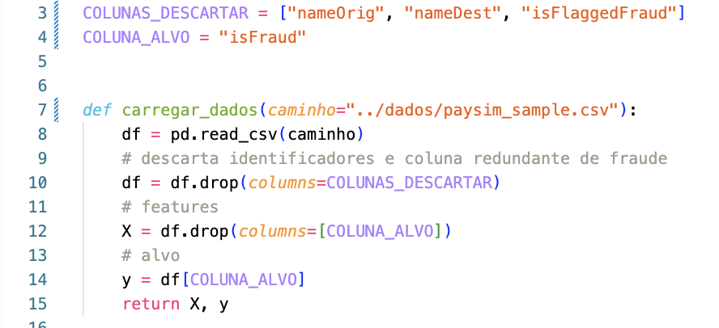
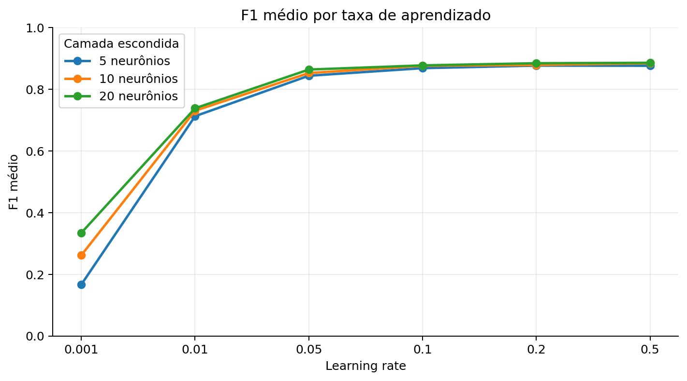
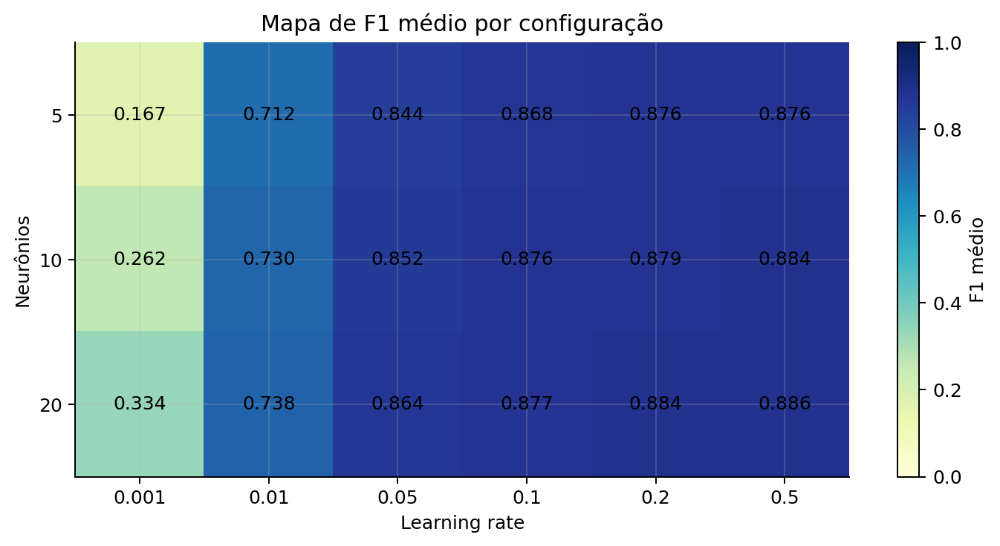
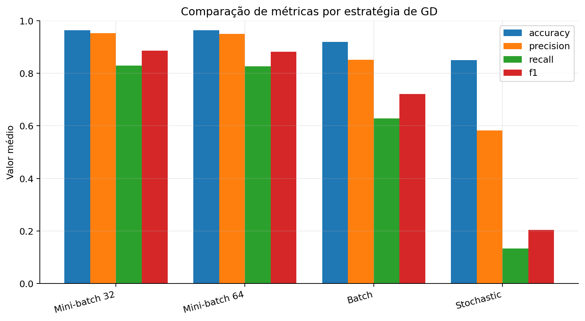
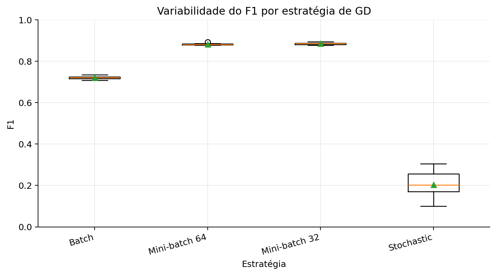
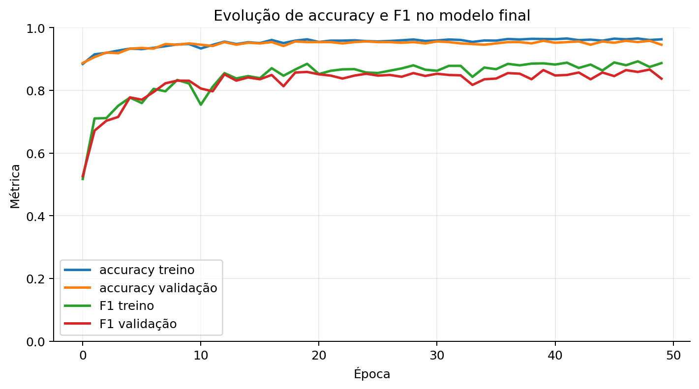
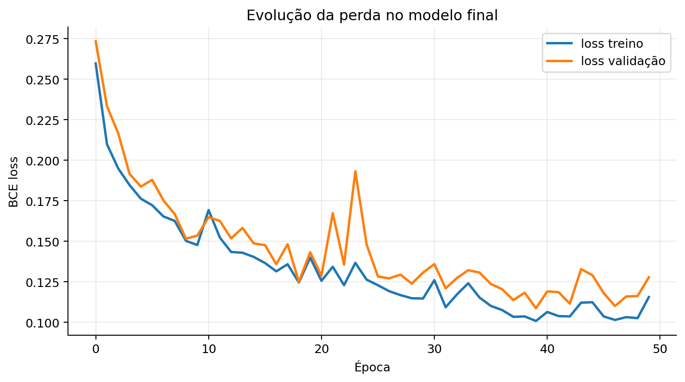
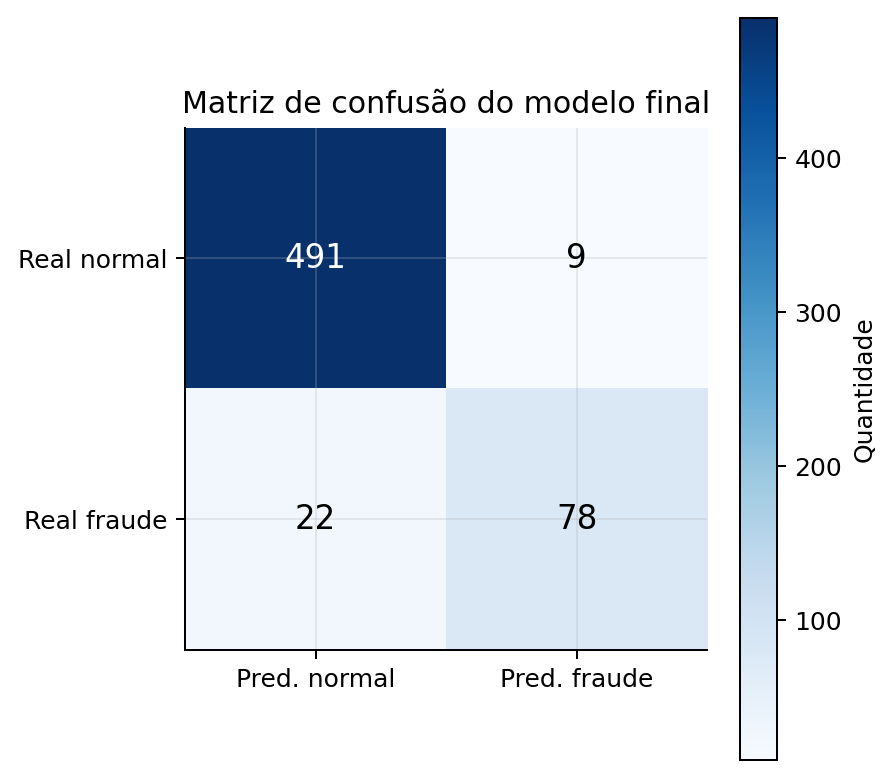

typenameOrig, nameDest e isFlaggedFraud (viés de ID)typeColumnTransformer aplica tudo de uma vez e evita data leakageFunção gerar_folds instancia um pipeline novo por fold, com fit só no treino, transform na validação (StratifiedKFold · 5 splits)Entrada de 11 features → 1 camada escondida → 1 neurônio de saída. Rede enxuta para um problema tabular pequeno.
Teorema da Aproximação Universal + 1920 amostras/fold: profundidade não agrega expressividade, só risco de overfitting.
GELU na escondida (evita dying ReLU); Sigmoid na saída
BCE penaliza proporcionalmente ao quão errada e confiante a rede estava. Valores altos de perda disparam gradientes maiores, forçando correções mais agressivas. O otimizador SGD atualiza os pesos a cada batch via backpropagation: zero_grad → forward → perda.backward() → step(). O Dropout 0.3 desliga aleatoriamente 30 % dos neurônios por passo de treino, impedindo memorização.
StratifiedKFold preserva a proporção de fraudes; cada config roda 10× (sementes 1–10), média dos 5 folds.val_loss).18 configurações · 10 sementes × 5 folds cada · teto de 200 épocas com early stopping
Neurônios controlam a capacidade da rede; taxa de aprendizado controla a velocidade de convergência — praticamente independentes, o que facilita ler a grade.
1 camada escondida, GELU, dropout 0.3, mini-batch 32, BCE e SGD — para isolar o efeito dos dois fatores em estudo.
Cada config rodada com 10 sementes; o resultado de cada execução é a média dos 5 folds estratificados.
O F1 sobe de ~0.17 (lr 0.001) e satura em ~0.88 a partir de lr ≈ 0.2 — as três curvas de neurônios quase se sobrepõem. Com lr baixo a dispersão entre sementes é enorme; a partir de lr 0.1 as caixas ficam estreitas e altas. Melhor config: 20 neurônios · lr 0.5 · F1 ≈ 0.886.


Fixada a melhor config (20 · lr 0.5), só variamos o lote. Mini-batch 32 → F1 0.886 (vs. 64: 0.883), Batch: 0.722 (1 atualização/época não converge no limite) e Stochastic: 0.203 — instável e ainda o mais lento (~3.9 s). Lotes menores fazem mais atualizações com ruído moderado que ajuda a generalizar.


Treino e validação caminham juntos: accuracy ~0.96 e F1 ~0.85–0.88 já nas primeiras 15 épocas. Na perda há um pico isolado na validação e um leve afastamento no fim. O early stopping parou em ~50 épocas (teto 200) e restaurou a melhor; o dropout 0.3 manteve as curvas próximas.


